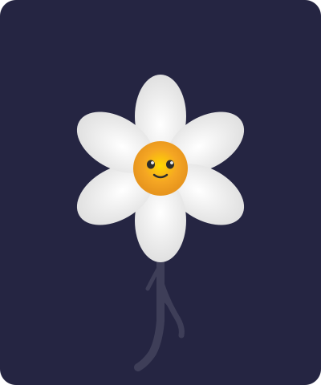
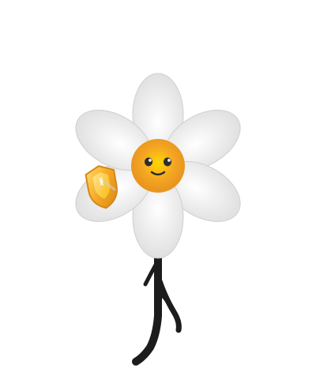
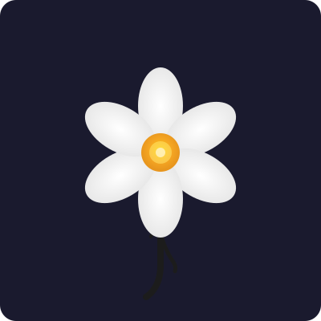
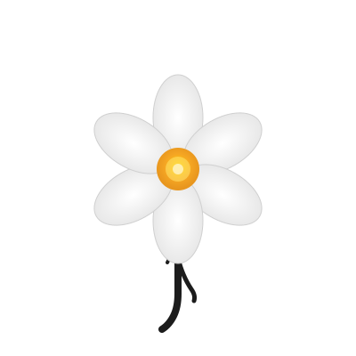
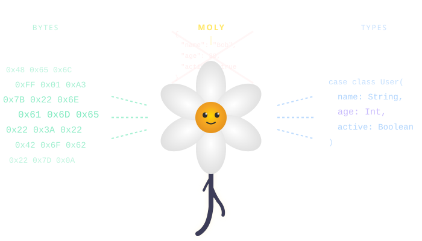
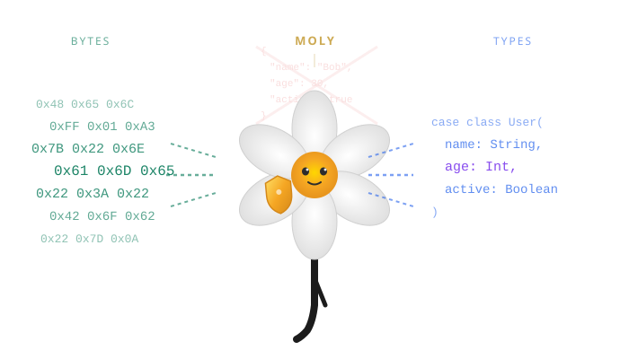

white petals · gold center · black root · quiet guardian
9 variants across dark, light, and scale contexts

Full character with expressive eyes, confident smile, and a shield held by the left petal. Primary identity for docs, social, and branding.

Faceless, abstract form. Six symmetric petals, golden center, branching root. Works where the character's personality would distract.


Narrative scene showing moly in action: raw bytes stream in from the left, the JSON AST fades behind the guardian, and typed Scala case classes emerge on the right. Used in the README header.


Reduced to essence: petals, center, root. No face, no shield. Designed to remain legible at very small sizes.
Ultra-simplified: just petals, gold dot, and a single root stroke. Separate SVG optimized for the smallest render target.